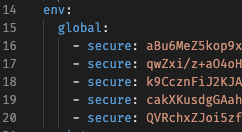

Cấu hình biến môi trường trên Travis CI
Ngày 24 tháng 5 năm 2020
Có một dự án mình có nhu cầu dùng Travis CI để build tự động qua bên Amazon Web Services. Trong lúc build, cần dùng Environment Variables (biến môi trường) và mình viết bài này để ghi chú lại các thao tác.
Tạo biến môi trường trên Travis CI
Đầu tiên, bạn vào project cần cấu hình, chọn Settings, kéo xuống phần Environment Variables.

Tiếp theo, bạn điền tên biến vào NAME và giá trị vào VALUE. Nếu bạn chỉ muốn biến đó chỉ sử dụng cho một nhánh nào đó thì chọn tên nhánh ở phần BRANCH, không thì chọn All branches. Và nhấn ADD.
Lưu ý một chút, nếu bạn tạo tên biến bằng cách này thì bạn vẫn thấy được giá trị khi vào Travis Settings.
Mã hoá biến môi trường
Với cách này, không ai đọc được value và có thể tạo/xoá/sửa biến ở local, không nhất thiết phải vào web.
Đầu tiên là bạn phải tạo fle .travis.yml đặt ở thư mục root của project.
Tiếp theo, bạn cần cài đặt Travis CLI tại máy thông qua lệnh sau:
Sau đó cần phải đăng nhập để có thể sử dụng, bạn gõ travis login (dành cho travis-ci.org) hoặc travis login --pro (dành cho travis-ci.com). Mình dùng tài khoản GitHub (username + mất khẩu) và nhập GitHub Token (nếu có cài đặt) là đăng nhập được.
Với cách này, mình sẽ mã hoá từng biến, tức là có 5 biến thì nhập 5 lần nhé.
Và đây là kết quả.
Tham khảo
- Travis CI, Environment Variables
- Travis CI, Encryption keys